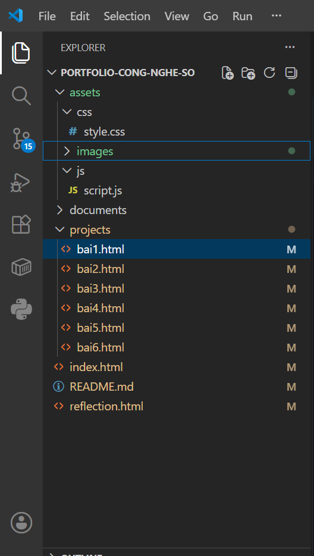

Quản trị Cấu trúc Dữ liệu Cục bộ
Thiết lập tư duy quản lý tệp tin không gian số: Xây dựng cấu trúc thư mục tối ưu và định hình quy tắc đặt tên chuẩn mực dành riêng cho kỹ sư.
NGUYÊN TẮC QUẢN LÝ DỮ LIỆU
Hệ thống hóa không gian lưu trữ cá nhân
Cấu trúc Thư mục Tối ưu
Thay vì lưu trữ dàn trải, dữ liệu được phân nhánh theo tư duy cây thư mục (Hierarchical Structure). Thư mục gốc đại diện cho dự án tổng (ThucHanh_DuongMinhPhuong), các tài liệu con được phân tách theo luồng công việc (VD: sub-folder TaiLieu). Điều này giúp rút ngắn thời gian truy xuất dữ liệu khi các dự án Cơ điện tử ngày càng phình to với hàng ngàn file code và bản vẽ.
Quy tắc Đặt tên Tệp (Naming Convention)
Áp dụng quy tắc tiêu chuẩn hóa: Không sử dụng khoảng trắng, không dấu Tiếng Việt (tránh lỗi mã hóa khi upload lên server hoặc đọc bằng code Python/C++). Sử dụng Snake_case hoặc PascalCase. Ví dụ: Từ một file nháp "GhiChu" đã được chuẩn hóa và đổi tên thành "GhiChuQuanTrong.txt", hay "DiChuyen.txt" để biểu đạt rõ ràng mục đích của file.
⚙️ QUÁ TRÌNH THỰC HIỆN & MINH CHỨNG
📄 Mở file PDF Minh chứngDựa trên yêu cầu bài thực hành, tôi đã hoàn thiện chu trình 12 thao tác cơ bản bao gồm:
- Khởi tạo & Định danh: Truy cập phân vùng ổ đĩa an toàn (không dùng ổ C hệ thống). Tạo thư mục gốc ThucHanh_DuongMinhPhuong và khởi tạo các file văn bản nháp.
- Cấu trúc lại dữ liệu: Tạo thư mục con TaiLieu, đổi tên file thành GhiChuQuanTrong.txt để dễ nhận diện.
- Điều phối Dữ liệu: Thực hiện các lệnh sao chép (Copy/Paste) tạo bản sao dự phòng, và lệnh cắt (Cut/Paste) để phân luồng file DiChuyen.txt về đúng thư mục đích.
- Quản trị rủi ro & Vòng đời file: Thực hành quy trình xóa mềm (đưa vào Recycle Bin), khôi phục dữ liệu (Restore) khi thao tác lỗi, và dọn dẹp bộ nhớ với lệnh xóa vĩnh viễn (Shift + Delete).
